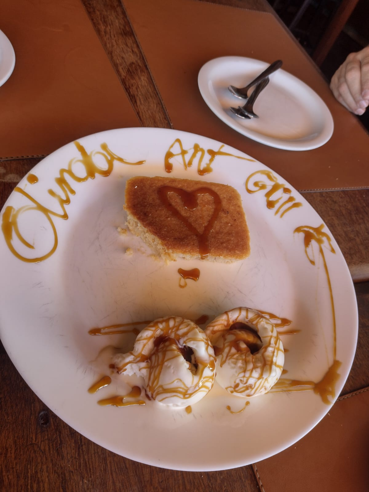
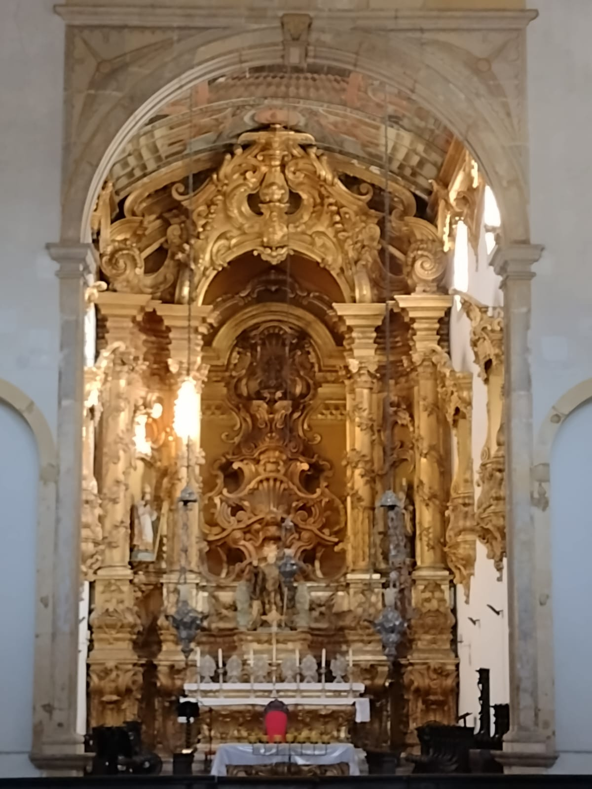
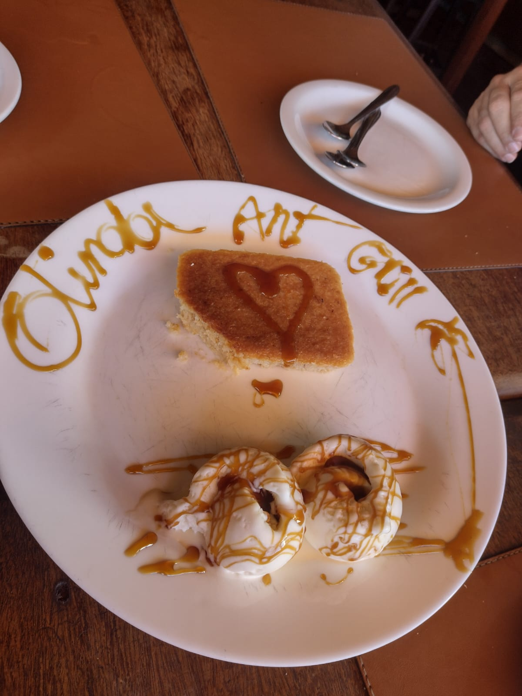
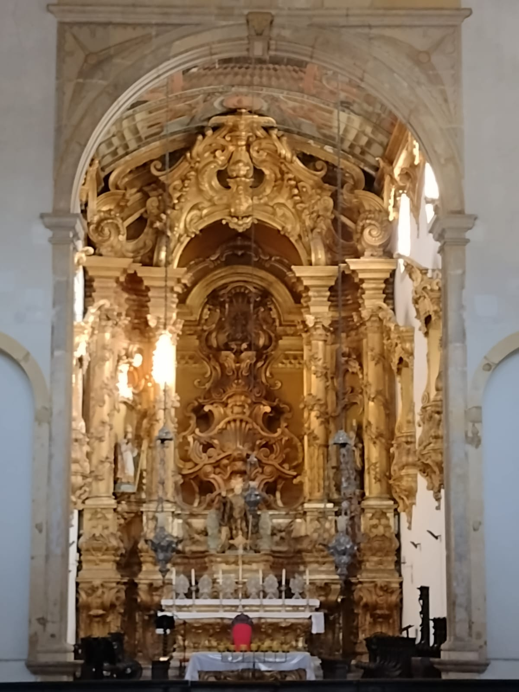

Olinda é conhecida por seus Bonecos Gigantes de Olinda, Catedral da Sé, Ladeira da Misercórdia, e muitos outros pontos turísticos. A cidade de Olinda é uma cidade muito animada e divertida, as pessoas de lá são bem receptivas e acolhedoras. A última vez que fui era época de carnaval e eu nunca vi um lugar mais animado, colorido e com uma energia maravilhosa.

 


